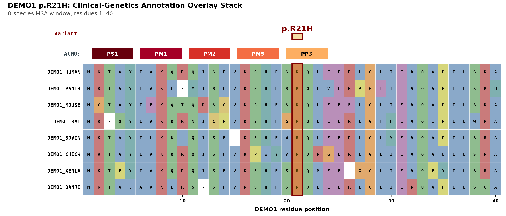
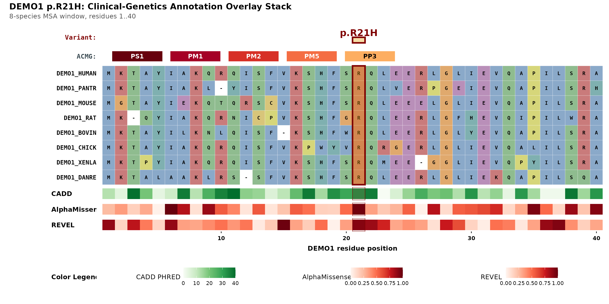
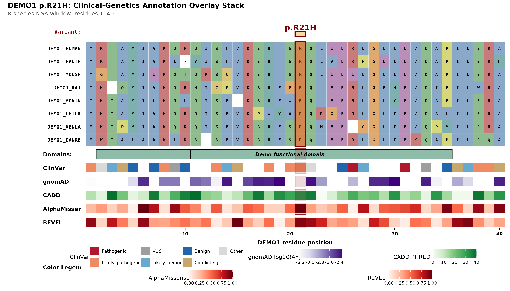
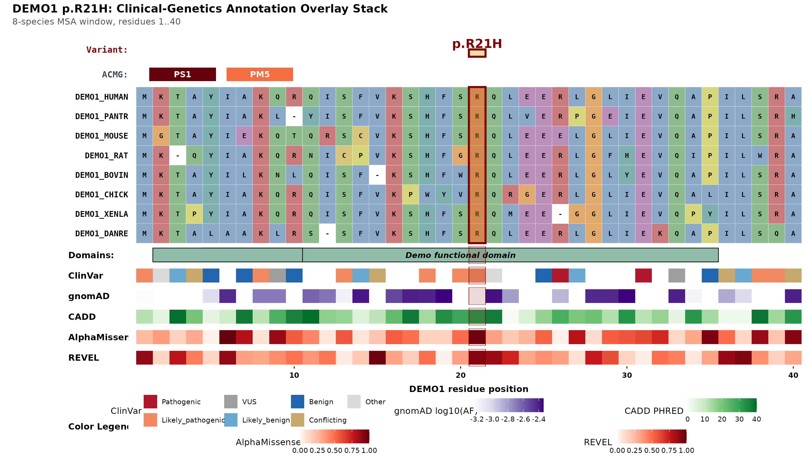
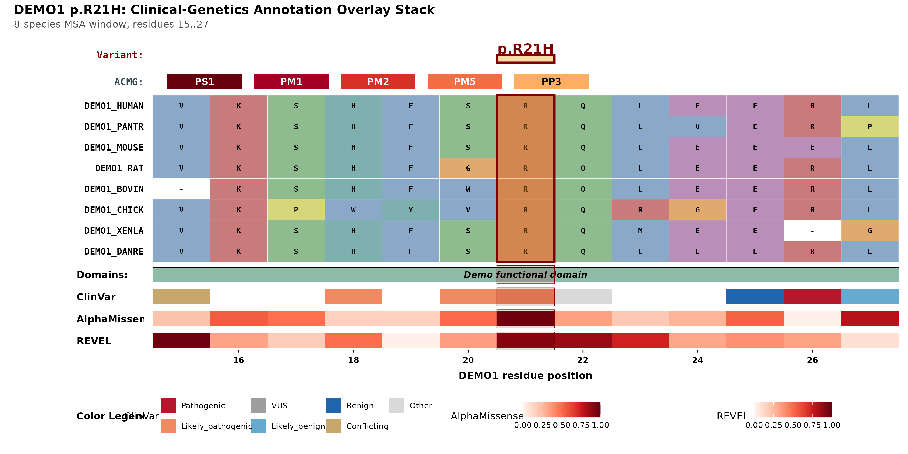

A figure for a supervisor and a figure for a journal are rarely the
same figure. plot_variant_overlay() gives every annotation
layer an on/off switch, and the layout re-flows to whatever remains — no
blank rows, no orphaned axis, no legend for a track that is not
there.
library(msaVariant)
Sys.setenv(MSAVARIANT_CACHE = tempfile("msaVariant_cache_"))
import_local_bundle(
system.file("extdata", "DEMO1.rds", package = "msaVariant"),
gene = "DEMO1"
)
demo_fasta <- system.file("extdata", "demo_aligned.fasta",
package = "msaVariant")DEMO1 is synthetic demonstration data, not real annotations.
The switches
| Argument | Layer |
|---|---|
show_acmg |
ACMG evidence-code chip strip |
show_domain |
Protein domain track |
show_clinvar |
ClinVar significance track |
show_gnomad |
gnomAD allele-frequency track |
show_cadd |
CADD PHRED track |
show_alphamissense |
AlphaMissense score track |
show_revel |
REVEL score track |
All default to TRUE. The variant header and the MSA
panel have no switch — they are the figure.
Everything on
The default: header, ACMG strip, alignment, all six tracks, and a legend dashboard.
plot_variant_overlay(
gene = "DEMO1",
aligned_fasta = demo_fasta,
variant_pos = 21,
variant_label = "p.R21H"
)
Everything off but the essentials
Alignment, variant, ACMG strip. Nothing else.
plot_variant_overlay(
gene = "DEMO1",
aligned_fasta = demo_fasta,
variant_pos = 21,
variant_label = "p.R21H",
show_domain = FALSE,
show_clinvar = FALSE,
show_gnomad = FALSE,
show_cadd = FALSE,
show_alphamissense = FALSE,
show_revel = FALSE
)
Compare the two. The minimal figure is not the full figure with holes in it — the panel heights are recomputed, the residue-position axis has migrated from the bottom track up onto the MSA panel, and the legend dashboard has disappeared entirely because no legend-carrying track remains. That is the whole point of the toggles: a subset stays publication-ready.
In-between: the in-silico predictors only
A common case — you want the computational evidence and the alignment, without the clinical and population context.
plot_variant_overlay(
gene = "DEMO1",
aligned_fasta = demo_fasta,
variant_pos = 21,
variant_label = "p.R21H",
show_domain = FALSE,
show_clinvar = FALSE,
show_gnomad = FALSE
)
Three tracks remain, three legends appear, and the axis sits on REVEL — the lowest surviving track.
Dropping the ACMG strip
show_acmg = FALSE removes the chip row. The codes are
still computed internally; they are simply not drawn.
plot_variant_overlay(
gene = "DEMO1",
aligned_fasta = demo_fasta,
variant_pos = 21,
variant_label = "p.R21H",
show_acmg = FALSE
)
Subsetting the codes instead
If you want the strip but not all five chips, keep
show_acmg = TRUE and pass acmg_codes — the
display filter. Only codes that are both requested and
triggered are drawn, so asking for a code that did not fire simply shows
nothing rather than an empty chip.
plot_variant_overlay(
gene = "DEMO1",
aligned_fasta = demo_fasta,
variant_pos = 21,
variant_label = "p.R21H",
acmg_codes = c("PS1", "PM5")
)
The distinction is worth holding onto:
-
show_acmg— does the strip exist at all? -
acmg_codes— which of the triggered chips get drawn? -
pp3_min_predictors— which codes trigger in the first place (seevignette("acmg-evidence-codes"))
Only the last one changes the underlying evidence call. The other two are presentation.
Missing data behaves like an off switch
A track is drawn only when its toggle is TRUE
and the bundle actually carries data for it. A bundle
with no REVEL table produces the same figure as
show_revel = FALSE — the row is not reserved and then left
blank.
This means you can pass the same explicit toggle set across a whole cohort of genes with uneven annotation coverage and every figure will still come out tight.
Windowing
Not a layer switch, but the other lever for figure density:
window sets the residue range on the x-axis, defaulting to
±20 residues around the variant, clipped to the protein.
plot_variant_overlay(
gene = "DEMO1",
aligned_fasta = demo_fasta,
variant_pos = 21,
variant_label = "p.R21H",
window = c(15, 27),
show_gnomad = FALSE,
show_cadd = FALSE
)
A narrow window makes individual residue letters legible in a two-column journal layout; a wide one shows more of the conservation context. Both stay aligned to the same shared x coordinate system, so every track lines up with the alignment column above it.
See also
-
vignette("annotation-tracks")— what each track shows -
vignette("colour-schemes")— restyling what is left after toggling -
?plot_variant_overlay— all arguments
Session info
sessionInfo()
#> R version 4.6.1 (2026-06-24)
#> Platform: x86_64-pc-linux-gnu
#> Running under: Ubuntu 24.04.4 LTS
#>
#> Matrix products: default
#> BLAS: /usr/lib/x86_64-linux-gnu/openblas-pthread/libblas.so.3
#> LAPACK: /usr/lib/x86_64-linux-gnu/openblas-pthread/libopenblasp-r0.3.26.so; LAPACK version 3.12.0
#>
#> locale:
#> [1] LC_CTYPE=C.UTF-8 LC_NUMERIC=C LC_TIME=C.UTF-8
#> [4] LC_COLLATE=C.UTF-8 LC_MONETARY=C.UTF-8 LC_MESSAGES=C.UTF-8
#> [7] LC_PAPER=C.UTF-8 LC_NAME=C LC_ADDRESS=C
#> [10] LC_TELEPHONE=C LC_MEASUREMENT=C.UTF-8 LC_IDENTIFICATION=C
#>
#> time zone: UTC
#> tzcode source: system (glibc)
#>
#> attached base packages:
#> [1] stats graphics grDevices utils datasets methods base
#>
#> other attached packages:
#> [1] msaVariant_0.2.0
#>
#> loaded via a namespace (and not attached):
#> [1] gtable_0.3.6 jsonlite_2.0.0 dplyr_1.2.1
#> [4] compiler_4.6.1 crayon_1.5.3 tidyselect_1.2.1
#> [7] Biostrings_2.80.1 jquerylib_0.1.4 systemfonts_1.3.2
#> [10] IRanges_2.46.0 Seqinfo_1.2.0 scales_1.4.0
#> [13] textshaping_1.0.5 yaml_2.3.12 fastmap_1.2.0
#> [16] ggplot2_4.0.3 R6_2.6.1 XVector_0.52.0
#> [19] patchwork_1.3.2 labeling_0.4.3 generics_0.1.4
#> [22] knitr_1.51 BiocGenerics_0.58.1 htmlwidgets_1.6.4
#> [25] tibble_3.3.1 desc_1.4.3 pillar_1.11.1
#> [28] bslib_0.11.0 RColorBrewer_1.1-3 rlang_1.3.0
#> [31] cachem_1.1.0 xfun_0.60 S7_0.2.2
#> [34] fs_2.1.0 sass_0.4.10 otel_0.2.0
#> [37] cli_3.6.6 withr_3.0.3 magrittr_2.0.5
#> [40] pkgdown_2.2.1 digest_0.6.39 grid_4.6.1
#> [43] cowplot_1.2.0 lifecycle_1.0.5 vctrs_0.7.3
#> [46] S4Vectors_0.50.1 evaluate_1.0.5 glue_1.8.1
#> [49] farver_2.1.2 ragg_1.5.2 stats4_4.6.1
#> [52] rmarkdown_2.31 pkgconfig_2.0.3 tools_4.6.1
#> [55] htmltools_0.5.9